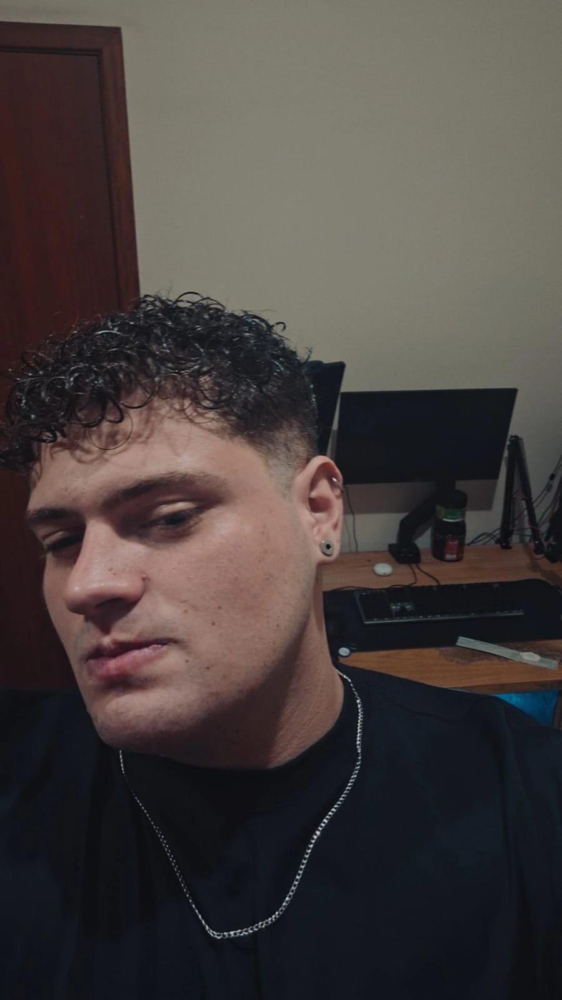

Olá, eu sou João Paulo 👋
Desenvolvedor Full Stack com foco em Frontend
Sou desenvolvedor web com foco em Frontend, apaixonado por transformar ideias em soluções digitais claras, intuitivas e eficientes.
Atualmente curso Engenharia de Software e atuo como estagiario em desenvolvimento web, o que me permite unir desenvolvimento, suporte e visão prática de negócio. Trabalho com tecnologias modernas para criar sites, sistemas e landing pages que realmente ajudam pessoas e empresas no dia a dia.
💻 Desenvolvimento de sites e landing pages
🎨 Interfaces modernas e responsivas
⚙️ Sistemas web personalizados
🔧 Manutenção e melhorias em projetos
Não entrego apenas código. Busco entender o problema, propor soluções simples e criar experiências digitais que funcionam de verdade.